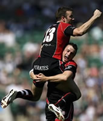

Rugby, Football, Hockey & Cricket in Penwith
The Cornish Pirates, now a extremely successful rugby team has its roots firmly planted in Penzance. In 1870, a team of students in the area started a team, which eventually turned into Penzance & Newlyn Rugby Club. This in turn lead to both the Pirates (now based in Camborne) and Mounts Bay Rugby Club.
- Cornish Pirates Rugby Club (01736 331961)
Westholme, Alexandra Road, Penzance, Cornwall, TR18 4LY
www.cornish-pirates.com
- St Just Rugby Club (01736 788593)
Tregeseal, St Just, Penzance
www.stjustrfc.co.uk
Football
The top South Western League team is Penzance AFC and the Cornwall Combination League provides the highest standard of league play from clubs solely within Cornwall.
- Penzance AFC Magpies Club (01736 361964)
Alexandra Place, Penzance
www.penzanceafc.co.uk
- Marazion Blues Football Club (01736 711020)
Long Barn, Trevenner Lane, Marazion
Hockey
Penzance Hockey Club has hockey teams for both men's and women. The club annually hosts a national ladies tournament and travels the South West to play
- Penzance Hockey Club (01736 362960)
St. Clare Ground, Penzance
Cricket
The Penzance Cricket Club plays on Saturdays at 2.00 p.m. with evening League games on alternate Tuesdays from 6:30 p.m.
- Penzance Cricket Club (01736 362960)
St. Clare Ground, Penzance
- St Just Cricket Club (01736 787495)
Cape Cornwall Road, St Just, Penzance
- Gulval Cricket Club (01736 361858)
Four Moors,
Higher Kennegy,
Gulval,
Penzance
image - Ryan Pierse